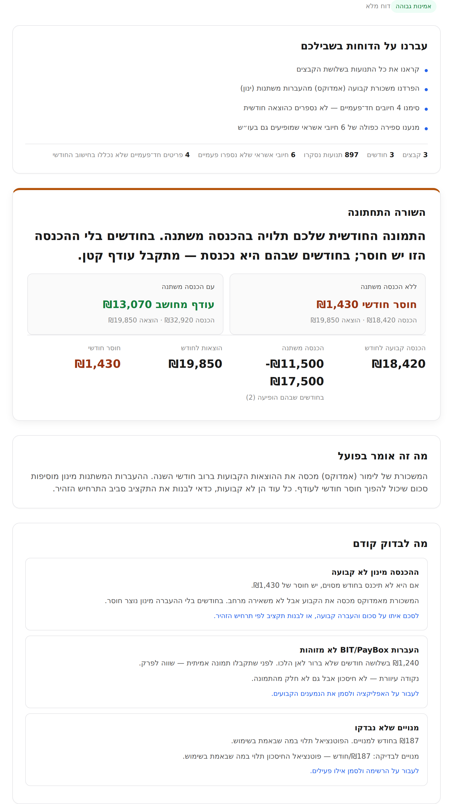

מעלים תדפיסי עו״ש וכרטיסי אשראי, ומקבלים בדיקה פיננסית עם תוצאות והמלצות: מה נכנס, מה יוצא, איפה נוצר הפער ומה כדאי לעשות קודם.
מתאים גם למי שיודע שצריך לעשות סדר אבל אין לו כוח להתחיל.
לא עוד טבלת הוצאות. בדיקה שחוסכת לכם לעבור על הקבצים לבד.

זו הערכה, לא הבטחה. הבדיקה אינה מחליפה ייעוץ פיננסי מקצועי.
תדפיסי עו״ש וכרטיסי אשראי שכבר ייצאתם מהבנק. 2–3 חודשים מספיקים לתמונה ראשונית.
מפרידים הכנסה קבועה ממשתנה, מנקים חיובי אשראי כפולים, מסמנים פריטים חד־פעמיים. שואלים רק אם חייבים.
שורה תחתונה, מה לבדוק קודם, איפה יש שליטה — בעברית, בלי הטפה.
לא אפליקציית תקציב. לא אקסל. לא יועץ. בדיקה ראשונית שעונה על שאלה אחת.
מצוינות למעקב שוטף, סיווג יומיומי, גרפים על פני זמן.
בדיקה חד־פעמית. תמונה מיידית, בלי התחייבות לניהול שוטף.
נותן שליטה מלאה, חינמי לחלוטין, מותאם אישית.
לא צריך לבנות כלום. מעלים קובץ קיים — מקבלים תשובה.
מתאים למצבים מורכבים, תכנון לטווח ארוך, ליווי אישי.
בדיקה ראשונית מהירה — לפני שמחליטים אם צריך יועץ.
מציגות מידע בזמן אמת מהחשבון, חיבור אונליין רציף.
לא מחוברים לבנק. רואים את כל הכרטיסים יחד, גם ממוסדות שונים.
אנחנו לא מנסים לנהל לכם את החיים הפיננסיים. אנחנו עונים על שאלה אחת: מה קורה בקבצים שהעליתם, מה יוצר את הפער, ומאיפה כדאי להתחיל.
לכל מי שמרגיש שהכסף נכנס — אבל לא נשאר.
לא צריך להיות במינוס כדי להרוויח מהבדיקה.
רוב האנשים לא יודעים בדיוק לאן הכסף הולך — ומה אפשר לשנות בלי לשנות את אורח החיים.
אנחנו לא מבטיחים שתחסכו 30%.
אנחנו מבטיחים שתראו את התמונה כפי שהיא, ותדעו מאיפה להתחיל.
הקבצים עצמם אינם נשמרים אצלנו. הנתונים מתוך הקבצים משמשים לבדיקה בלבד ונמחקים אחריה.
הבדיקה אינה מחליפה ייעוץ פיננסי, מיסויי, ביטוחי או השקעות. במקרים מורכבים כדאי לפנות לאיש מקצוע מוסמך.
תדפיסי עו״ש וכרטיסי אשראי בפורמט Excel — אלה שמייצאים מאתר הבנק או מחברת האשראי. עדיף 2–3 חודשים אחורה כדי לראות תמונה יציבה ולא חודש חריג.
לא. אנחנו לא מתחברים לבנק ולא מבקשים שם משתמש או סיסמה. אתם מורידים את הקבצים מהבנק שלכם ומעלים רק אותם.
לא. הכל רץ בדפדפן. בלי הורדה, בלי הרשמה, בלי מנוי.
לא. הקבצים עצמם אינם נשמרים. הנתונים מתוכם משמשים לבדיקה בלבד ונמחקים אחריה.
דוח אחד עם שורה תחתונה ברורה, מה משנה את התמונה, מה לבדוק קודם, ופירוט לפי תחומים: דיור, מזון, תחבורה, חשבונות, חוב, מנויים.
לא. הבדיקה היא תמונת מצב ראשונית ומדוייקת — לא ייעוץ. אם המצב מורכב או מצריך החלטות גדולות, כדאי לפנות לאיש מקצוע מוסמך.
כרגע השירות חינמי במסגרת השקה. אין מנוי, אין התחייבות. ייתכן שבעתיד נציע אותו במחיר השקה סמלי לבדיקה חד־פעמית.
לרווקים, זוגות, משפחות, עצמאים, שכירים — ולמי שיש חובות, מינוס או הכנסה משתנה. לא צריך להיות במינוס כדי להרוויח מהבדיקה.
העלו תדפיסים קיימים וקבלו שורה תחתונה ברורה: מה קורה, למה זה קורה, ומה כדאי לעשות קודם.
כ־5 דקות · בלי חיבור לבנק · בלי להוריד אפליקציה